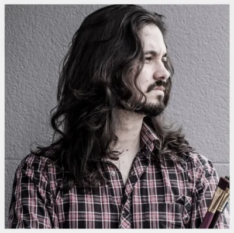
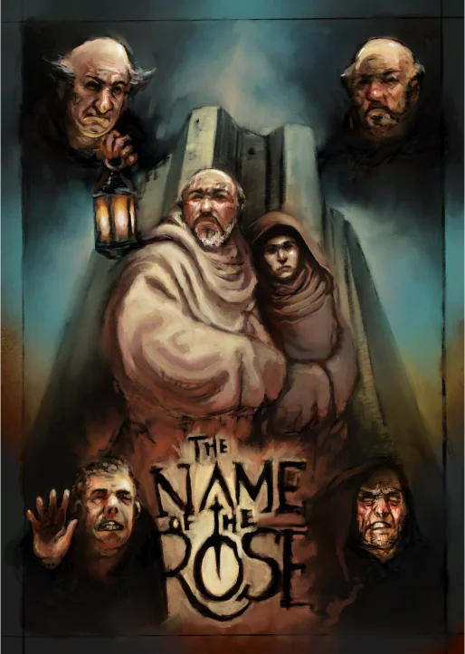
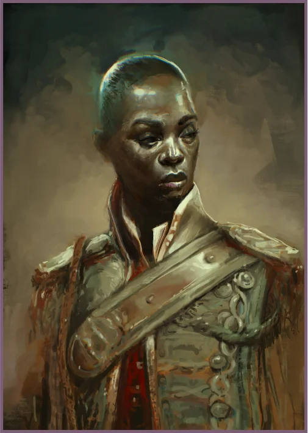
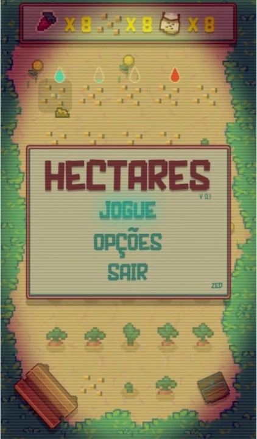
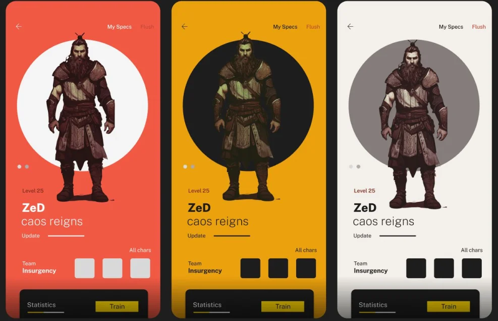

About me
I learned oil painting through the classical method, then moved to digital painting on the iPad, where most of the work below was made. This page holds illustration, character design and the art I made for games. I am also a gardener and a beekeeper.
Work




Engineering
Engineering work (Godot, C++, game development and audio tools) lives on GitHub, next to the code: github.com/zednaked